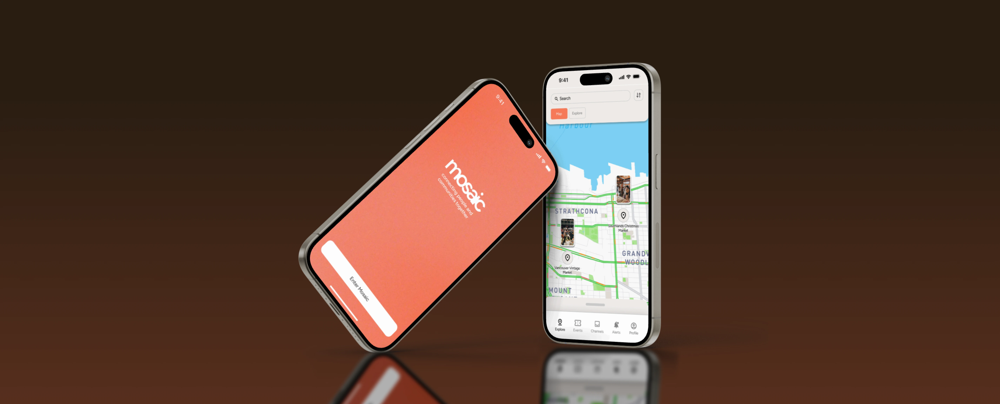
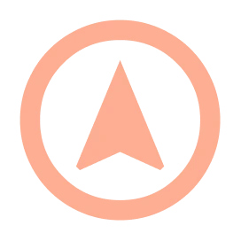
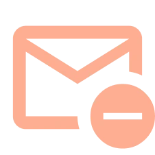
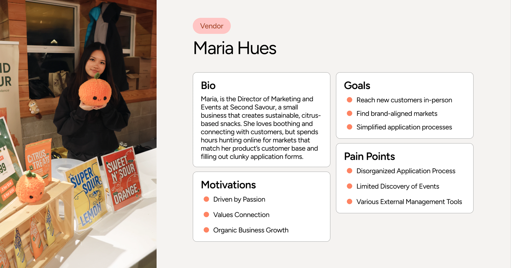
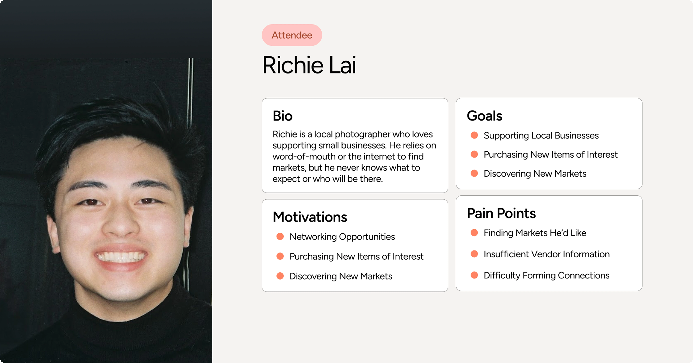
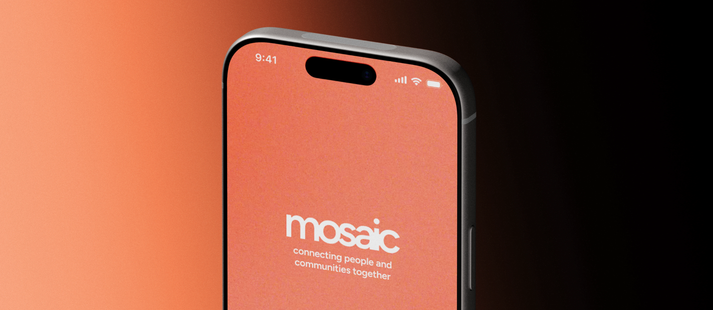

Mobile Application Design
Timeline
Oct. - Dec. 2025
Role
UX/UI Designer
Disciplines
UX/UI Design, Product Design
Team
Me and 5 others
Intro
Contextualizing the Domain

Vendor application forms tended to be tedious, confusing and inconsistent.
The typical email communications stalled outreach and key information.

Vendor interviewees felt they needed more ways to represent their works.


The Result

Vendor Profile
Attendee Saved Page
Market Page
In-Event Directory
Usability Testing
Users found button functions weren’t openly clear, this made us re-evaluate our naming of buttons.
Attendees found hard to find vendors, needing to click on each booth to look for them.
Vendor interviewees felt they needed more ways to represent their works.
Reflection